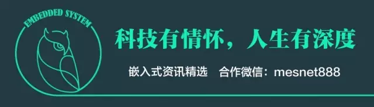
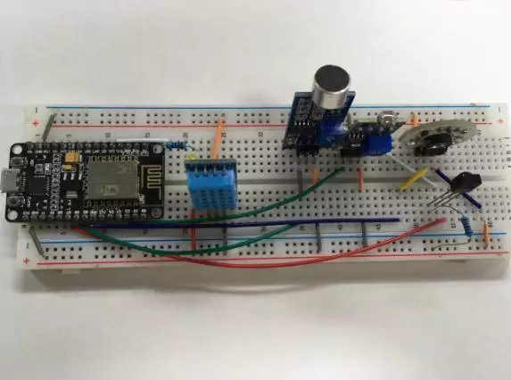

物联网技术到底是什么技术？

最近听到一句话“只要有人的地方，就有物联网技术”。据说有开设这个专业的大学，就想知道这个专业到底是学什么的？
「只要有人的地方，就有物联网技术。」我不清楚这句话的出处，只知道有人的地方就有江湖~哈哈。想说的是，「物联网技术」这个名词是一个很大很泛的概念，可以说不存在这种技术，也可以说这技术实际上就是当今电子、通信、计算机三大领域的基础技术。
回答「物联网和互联网的区别和联系？」简单阐明了物联网和互联网之间的关系。请问，1994年中国接入互联网以来，我们作为互联网原著居民的90后，认为互联网技术又是一种怎样的技术呢？
我就奇了怪了，当初教育局怎么不开一个互联网技术专业？实际上现在也没必要开设互联网专业了，当今大学的计算机系本科所学的大部分内容，就是互联网会用到的技术。其中之一是Web建站技术。
Web 建站技术中，HTML、HTML5、XHTML、CSS、SQL、JavaScript、PHP、ASP.NET、Web Services 是什么？ - 张秋怡的回答
什么？你们计算机系不是学这些？来来来，我电脑坏了，过来帮我修一下电脑吧~
总之，互联网是一个时代，物联网，也是一个时代。物联网技术是当今电子、通信、计算机、IT行业技术的大融合。如图，物联网技术的技术组成（简单版）。
智能硬件，哎，不就是单片机吗？说到底就是一个微控制器，现在出现的智能手表，调光LED灯，蓝牙开锁，WiFi插座等等，说到底不就是单片机开发嘛？单片机，电子和通信专业一般都会教51或AVR、计算机系接触不到。现在流行的Arduino也是单片机开发的一种。
但是要做一款智能硬件，技术上只会单片机编程还是不行的。哎呀嘛什么智能硬件，本质上就是一个电子产品！。所以你要开发一款能拿得出手的智能硬件，电子系统设计必须要会的！
电子系统设计（电子系统设计与实践 (豆瓣)），我不是指《电子系统设计》这本书里的内容，而是一个动手实验过程。要做智能硬件，广看书没用，只会单片机编程也不够的！真正有用的是一个实打实的课程设计，或者一个项目经历。一个电子系统设计流程一般是这样的。
硬件设计阶段：
MCU选择
电路设计（电路图）
验证电路（面包板、万用板）
电路板设计（PCB图）
送工厂打板或自己做板
元器件、物料管理（采购等）
拿到电路板后
焊接芯片和元器件
上电测试
烧写最后版本的代码到芯片里

如果你熟悉以上硬件设计阶段，并知道要做什么事情，已经是一个合格的单片机硬件工程师了哈~接下来就是单片机软件工程师的事情了，单片机软件一般都不会太复杂，有的不用操作系统的裸机开发，做过单片机课程设计的学生都懂。
软件设计流程：
确定软件架构（主循环？状态机轮询？）
编写软件
调试代码（开发板或自己搭建好的电路）
烧写最终版本的代码到电路里
这些都不算复杂了，如果你用的芯片高级一点，不是微控制器而是微处理器的话，那么就是嵌入式开发了。
 ARM芯片架构系列
ARM芯片架构系列
一般网上STM32开发板的芯片是STM32F103，也就是Cortex-M3核，还算是单片机开发，如果外设没有太多功能，单片机想用更小巧一点的，可以选用M0核的芯片，名副其实的微控制器了。如果使用Cortex-A9开发，你这是要开发手机还是机顶盒？
Cortex-A系列芯片的开发，或者说这类产品，一般一个人不可能独立完成所有工作，这种嵌入式开发的技术最少分为四个层次：硬件层、驱动层、系统层和应用层。每一层次都需要有人去设计。驱动和系统可以移植，硬件电路板肯定要专门的硬件工程师去做的，应用层可以交给应用工程师，只要上了Linux系统，不也就是Linux应用开发嘛？如果去网上买回来的嵌入式开发板，能拿得出手的项目只能应用层开发，比如什么「数码相框系统」、「视频点播系统」。别告诉我学会移植uboot或Linux就可以找工作了。
智能硬件与传统的电子产品最大的差别，就是智能硬件连上了网络。要连上网络，就需要用到网络通信模块及学习网络通信协议——TCP/IP。

TCP/IP是一个技术的总称，里面包含两种协议TCP、UDP，位于网络通信分层模型的传输层，同时也是由操作系统管理。而HTTP、DNS、URI等这些技术，属于应用层，位于TCP/UDP之上。同样，最近物联网比较流行的，针对计算能力有限的通讯设备而出的MQTT协议，也属于TCP之上。
为了让电子产品有联网的能力，只要在电路设计上给主控芯片连接一个通信模块，写好收发网络指令的代码，剩下的就是电子产品设计了。
到这里，基本是一个物联网产品的雏形了，以上也是物联网中基本会用到的电子和通信技术。
Client/Server架构，即客户端/服务器架构。智能硬件连上后台服务器后，其就是一个客户端，一个终端。由于单片机中资源受限，实际上是不太可能用HTTP协议的，所以互联网中通用的Web服务器开发并不适合这里。有的厂家会在TCP之上自定义协议，有的就移植别人做好的协议比如MQTT，CoAP等等。
服务端开发就比较复杂了。单片机/嵌入式软件开发还好，只要学习好C语言即可打遍天下无敌手，而服务端开发，用Java呢还是Python还是PHP？反正Java和Python选一个就好了，嵌入式出身的工程师，一般都会学Python。
Python服务器端的开发框架种类繁多，Web开发的有Django、Flask、Tornado Web Server，TCP服务器可以用Twisted，等等。MQTT有已经做好的服务器，像这样的服务器不用自己开发，直接部署即可。

如图，这是我开发一个智能硬件的服务器端的框架图。使用Redis作为HTTP和TCP服务器的数据共享内存，TCP Server收到的硬件端Client数据都存放到Redis里，用户端通过HTTP Server服务器，从Redis里获取硬件端的数据，然后展示到Web端或手机端上；如果用户端需要控制硬件，给HTTP服务器发送请求，然后Flask发送指令到Redis，Twisted从Redis收到指令后，就会给对应的硬件端发送指令，最后硬件执行响应的操作。
在这个项目开发中，最少需要开发用户端的HTTP服务端和硬件端的TCP服务器。Flask和Twisted都可以说是互联网技术里的服务端开发技术，现在我把这两个技术框架拿过来一用，是不是也算物联网技术？物联网技术本身就是在现有成熟的技术上发展而来的。
到了这里，服务端开发和前面两个技术可以作为一个分层，前面的单片机/嵌入式和网络通信的开发可以算作是一个电子设备的开发，后台工程师只要拿到了这个电子设备，知道这个设备提供了哪些接口（API），就可以进行后台开发了——把设备连上网络，分配给它一个IP或者什么的，配置好接口及相关操作，剩下的事情就交给前端了。
关于前端技术
关于前端技术，我这里不好单独写一个主题，其一，我对前端技术没有那么熟悉，还处于前端技术=HTML+JavaScript+CCS的概念，以及手机端的APP开发；其二，前端技术与电子硬件技术间隔相差太远，前端更多的是和美工沟通，和后台协调，和设计师交流，甚至可能还需要有一定的美感；其三，大部分项目的最重要的是实现设备的稳定性、联网、数据的获取和控制。如果设备不稳定，数据出现差错，没法控制，再漂亮的前端页面也没用。其四，如果是做智能家居，做消费电子领域的项目，针对广大普通消费者，比如WiFi插座，一个漂亮的界面是很重要，但是大多数的物联网项目，只需要一个后台管理界面就行了。
所以，没有前端的设计，界面都是很丑咯！

物联网技术之四：无线自组网
无线自组网，或称无线传感网络，这肯定是物联网专业的学生要学的一门学科，属于通信领域，电子、计算机出身的人对这没有太多的概念。无线自组网最典型的技术之一是，ZigBee。
什么是自组网？做个对比，比如我们的WiFi，我们要用手机去连一个SSID，输入密码才能连上WiFi，而且你的手机，一般来说也不可能再发射Wifi出去让其他手机连接，WiFi网络拓扑成星型网。

而自组网不一样，不需要用户输入用户名和密码，直接连到最近的一个自组网设备，最后自组网设备也可以作为一个中间节点，让下一级的设备连接进来，网络拓扑可以成星型网、簇型网和网型网。那么无线自组网的数据怎么流动呢？流去哪？无线自组网一般都会有一个数据汇聚的地方，这个地方就是网关。
但是ZigBee并没有连上互联网啊，它最多只是一个局域网！——这还不简单？这是就是网关要处理的事情了。而且，ZigBee协议栈Z-Stack是有Linux网关版本的。
Z-Stack - ZigBee 协议栈
不过呢，由于各种原因，ZigBee开始走下坡路了，最新的6LoWPAN会逐渐替代。6LoWPAN，是一种低功耗的无线网状网络，其中每个节点都有自己的 IPv6 地址，允许其使用开放标准直接连接到互联网。ZigBee使用网内专用地址，互联网主机无法访问。集成 Ipv6/6LoWPAN 堆栈的开源操作系统Contiki也会逐步取代Z-Stack。
如果大学开设了无线自组网的课程，不是学习ZigBee的Z-Stack就是Contiki。使用无线自组网也并不是一个单独的开发过程，其技术需要结合单片机/嵌入式开发。
电源问题
是的，如果要用无线自组网，电池续航的能力是一个问题。如果是类似与WiFi插座、智能饮水机、智能风扇等等，接上市电就能用，这些电源都不是问题。而对于无线自组网，往大的方向说就是所有的便携式智能设备，都受限于电池续航能力，比如智能手表，运动手环。不过呢，突破电池技术并不是物联网开发者所需要做的工作，我们能做的，只能是挑选更低功耗的芯片，设计电路功耗更低一点，让单片机休眠并使用中断唤醒机制。

用水果电池供电的某430单片机系统

仔细观察上面那张无线技术的图，最右边，NFC/RFID。嗯，对，RFID，非接触射频识别，也是物联网技术重中之重的技术，很多物联网书籍都会介绍RFID，搞得很多人以为RFID就是物联网。
介绍RFID前先简单说一下条形码。去超市购物的时候，收银员把扫描枪对准上面的条形码扫一扫，商品信息和价格就录入到电脑里了。条形码替代了收银员手动输入数据，工作效率提高了几倍。

可是，进入21世纪后，条形码已经不能满足人们的需求，存储能力小、工作距离近、穿透能力弱、不能写操作等等都是条形码的缺点。这个时候就出现了RFID技术。典型应用如下图：

（。。。好像没有什么奇怪的啊？）
一二线城市早已实现了的公交卡，以及校园一卡通，用的就是RFID技术。RFID可读可写，所以公交卡、校园卡的钱能存在卡里面。
NFC，也是RFID的技术一种，目前大部分手机都支持的NFC功能，手机取代公交卡真的是迟早的事。要是手机没有NFC功能，也可以这么装逼：
上班，在地铁里碰到同事。
我看他用手机刷卡出入站挺方便，就问他怎么弄的，是不是要下载什么软件。
他告诉我：“这个很简单，只要把公交卡藏在手机套里就行了。”
同样，RFID开发也是离不开单片机开发，网上也有相关的RFID开发套件出售。
当然，物联网技术绝对不止以上五种，物联网本身就是所有技术的大融合，做电子产品的还要考虑产品外壳，不过这是结构工程师的事情；做服务器后台的还要考虑用户帐号数据库读写等，前端也要考虑如何把设备数据和操作方式优雅的展现给用户看，这些是IT程序员的事情；电池技术也需要单方面突破，超小体积、超大容量，这个还得等待多时。
与其说物联网是一种技术吧，不如说它是一个时代，物联网通过对相关技术进行整合，形成一个时代的概念，是一个建立在技术基础之上的时代。

2.AlphaGo之父说，关于围棋，人类3000年来犯了一个错！

免责声明：本文系网络转载，版权归原作者所有。如涉及作品版权问题，请与我们联系，我们将根据您提供的版权证明材料确认版权并支付稿酬或者删除内容。